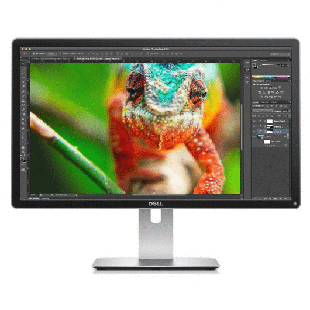
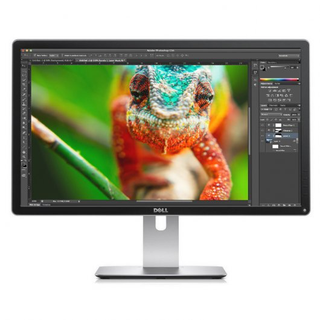
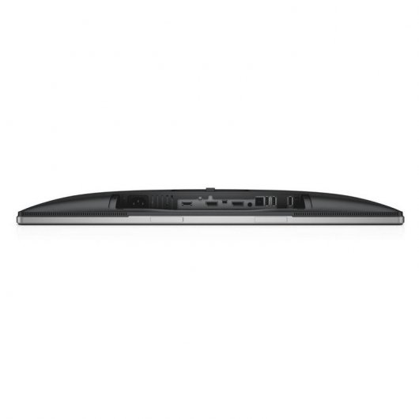

FUTURETECH STORE |
|    |
Dell P24 IPS 4K 24"
409€
El monitor DellTM 24 Ultra HD 4K - P2415Q ofrece 60,47 cm (23,8") de increíble resolución de 3840 x 2160. Esto supone más de 8 millones de píxeles, con una resolución cuatro veces más detallada que Full HD. Con la gran densidad de píxeles, podrá ver en la pantalla hasta el más mínimo detalle, para visualizar y editar fotografías de mayor resolución y mucho más. Cree una obra maestra con más claridad y mejores colores a un precio asequible.
Características
Precisión del color casi perfecta.
Disfrute de colores naturales y uniformes en diferentes medios, pues cada monitor viene ajustado de fábrica con un 99 % de cobertura de la gama de colores de sRGB e incluye un informe de calibración del color de fábrica que certifica que cada monitor tiene un valor Delta-E inferior a 3. Eso significa que obtendrá una cobertura de colores precisos desde el primer momento con una extraordinaria profundidad de color de 1070 millones de colores. Cada tono se mantiene uniforme al mirarlo desde prácticamente cualquier punto de vista gracias al ángulo de visión ultraamplio de 178°/178°.
Capacidad de ajuste completa.
Disfrute de todos los detalles que el monitor Dell 24 Ultra HD 4K - P2415Q proporciona con total comodidad gracias a su capacidad de ajuste completa. La base incluida permite inclinar el monitor (5° hacia delante o 21° hacia atrás), pivotarlo y rotarlo; además, tiene un sistema para el tendido de cables integrado. Elija la base de altura regulable para disfrutar de una experiencia visual a su medida o, si prefiere reconquistar el espacio de su escritorio, retire la base y opte por el kit de soporte mural compatible con VESA de 100 x 100 mm. (Los accesorios para el montaje mural se venden por separado)
Conectividad completamente digital.
Conecte el monitor fácilmente con otros periféricos de forma simultánea y visualice el contenido de sus dispositivos de mano en la pantalla del monitor, sin comprometer la calidad de la imagen. Con DisplayPort 1.2, puede conectar en serie dos monitores de forma paralela mediante los puertos DP de entrada y salida; de esta forma, elimina la necesidad de conectar cada uno de los monitores al PC y reduce el desorden de cables. Utilice el puerto de carga USB 3.0 de alta velocidad para cargar y alimentar dispositivos compatibles con BC1.22 y otros dispositivos USB. Conecte el monitor a su tableta o teléfono inteligente compatible con MHL y visualice el contenido directamente en la gran pantalla del monitor a través de MHL.
Diseño respetuoso con el medio ambiente.
El monitor Dell 24 Ultra HD 4K - P2415Q cumple los estándares y las directrices medioambientales más recientes, Certificación ENERGY STAR®, Calificación EPEAT® Gold3, TCO Certified Displays
Especificaciones
Pantalla
Color: Negro
Tamaño de imagen visible diagonal: 60,47 cm (23,8")
Formato: Panorámica (16:9)
Tipo de pantalla y superficie: In Plane Switching (conmutación en el mismo plano)
Resolución óptima: 3840 x 2160 a 60 Hz
Área de pantalla predeterminada (H x V): 527,04 mm (20,75") x 296,46 mm (11,67")
Relación de contraste: 1000:1 (típica), 2 millones a 1 (DCR)
Brillo: 300 cd/m2 (típico)
Tiempo de respuesta: Gris a gris. 8 ms (típico), 6 ms (rápido)
Ángulo de visión: 178° vertical / 178° horizontal
Capacidad de ajuste: Inclinación, pivotado, rotación y altura regulable
Compatibilidad con colores: 1070 millones de colores
Separación entre píxeles: 0,13725 mm (an.) x 0,13725 mm (al.)
Tecnología de retroiluminación: Sistema LED de luces en los bordes
Tipo de pantalla: Pantalla panorámica
Revestimiento de la pantalla: Tratamiento antirreflectante del polarizador frontal (3H)
Tamaño y peso
Dimensiones (con base):
Altura (plegado/extendido): 369,53 mm (14,55")/499,53 mm (19,67")
Anchura: 566,64 mm (22,31")
Profundidad: 205 mm (8,07")
Peso (solo pantalla, para soporte VESA): 3,34 kg
Conectividad
Entrada de DisplayPort
Mini DisplayPort
Salida de DisplayPort
HDMI (MHL)
Salida de línea del altavoz
4 USB 3.0 de bajada
1 USB de subida
Electricidad
Tensión requerida: De 100 a 240 V CA/50 o 60 Hz ± 3 Hz/1,8 A (máximo)
Consumo de energía (en funcionamiento): 90 W (máx.)/45 W (típico)
Consumo de energía en modo de espera o en modo suspendido: Inferior a 0,5 W
|


{kind=link}
{kind=link}